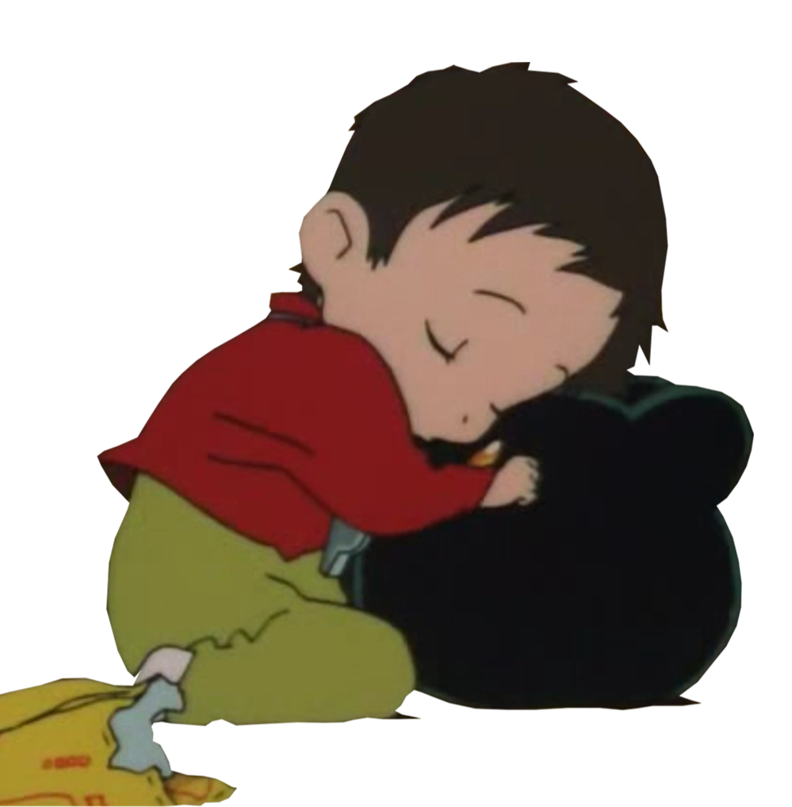
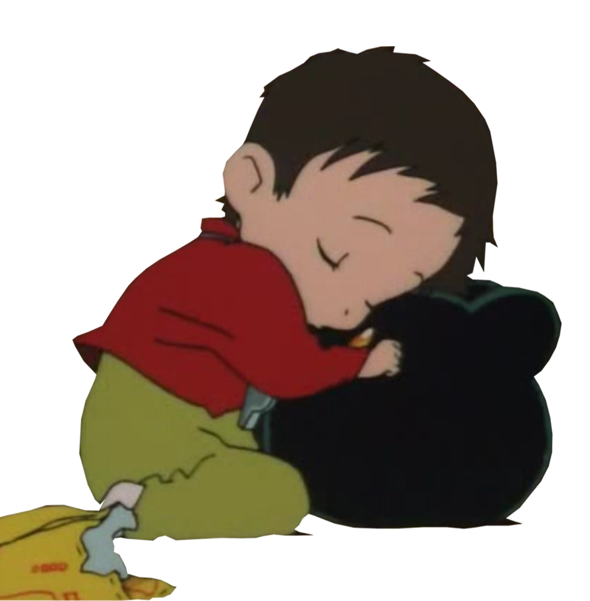
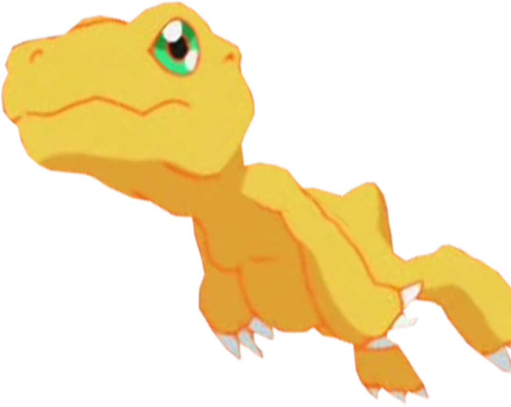
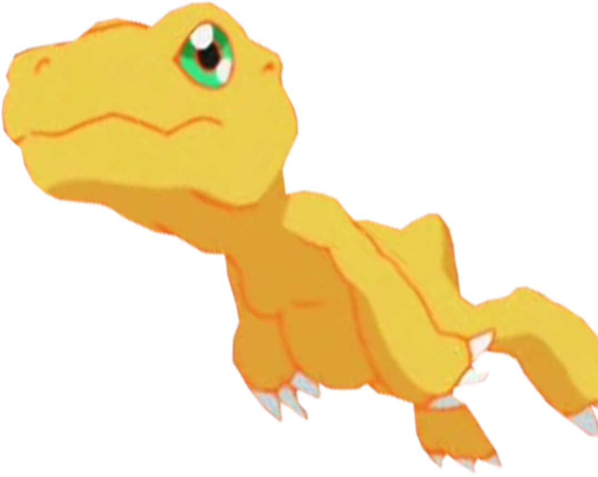

1999
디지몬 어드벤처 극장판 1기
:운명적 만남
1999년 3월 6일 개봉한 디지몬 어드벤처의 첫 번째 극장판.
기본적으로 부제는 없으나,
팬들은 보통 '운명적 만남'이라는 제목으로 부른다.
투니버스 공식 더빙판에서는 부제를
'디지몬의 탄생'이라고 정하였다.
호소다 마모루의 첫 데뷔작이기도 한
이 극장판은 일본에선 TVA 디지몬 어드벤처
방영 하루 전 상영 했으며,
본 작품인 디지몬 어드벤처의 4년 전 시점인
1995년도 이야기를 담은 프리퀄이기도 하다.


사실 이 극장판으로 인해 나리가 8번째 선택받은 아이가 아니라
첫번째 선택받은 아이라는 떡밥이 생겼다.
(코로몬을 진화 시켰기때문에)
이 극장판에서 본 시리즈의
8명의 선택받은 아이들이 어린시절이 모두 나온다.


2000
디지몬 어드벤처 극장판 2기
:우리들의 워게임!
원래부터 디지몬 팬들 사이에서 명작으로 평가받던 작품이며,
같은 호소다 마모루 감독의 2009년작인 썸머 워즈가 사실상
우리들의 워 게임의 리메이크에 해당한다. (악당이 같음)
화려한 연출이나 색감 때문에 디지몬 팬이 아니더라도 한번 쯤은
볼 가치가 있는 작품이라고 생각이 든다.
시기상으로 디지몬 어드벤처가 끝난 이후,
다음해인 2000년 봄방학. 이 다음에 파워 디지몬으로 이어진다.
단순한 이벤트성 극장판이 아니라 파워 디지몬의 스토리와 연결되는
중요한 복선으로 작용하며, 조그레스(합체진화)의 설정이나 새로운
선택받은 아이들의 탄생을 설명할 때 작중 직접 이 사건이 언급되기도 한다.
 



이 당시만 해도 극 중 암묵적인 커플링은
태일♥소라였다.
파워디지몬의 선택받은 아이들도
이 극장판에서 전투를 구경하는 아이들로 나온다.


2000
디지몬 어드벤처 극장판 3기
:황금의 캡슐진화
2000년 4월 2일 개봉.
디지몬 시리즈의 3번째 극장판이자,
주식회사 반다이 창립 50주년 기념 작품.
디지몬 어드벤처 02의 타임라인에 속한다.
TVA의 초중반쯤에 일어난 이야기인데,
TVA과의 연관성은 전혀없다.
(어드벤처 극장판으론 유일한 외전).
투니버스에서 방영할 당시의 제목은 '황금의 캡슐 진화'.
시간이 약 1시간대로 또한 디지몬 시리즈의 극장판
중 첫 장편 작품이다.
평가는 상당히 좋지 않다.
전개가 지루해서 보다가 중간에 그만뒀다는 사람들도 있고
몇몇떡밥이 회수되지 않고 맥거핀에 가깝게 다뤄지는
허술한 면으로 인해 워 게임보다
떨어진다는 평가를 받았다.


디지몬팬들 사이에서는
작화말고 볼게 없는 작품으로 많이들 언급된다.
하지만 작화는 굉장히 잘 뽑았던 작품으로 인정.
극장판에서는
기적의 문장과 운명의 문장이 캡슐진화하는데,
운명의 문장이 나온 처음이자 마지막 작품.
본 시리즈에서는
(용기,우정,순수,지식,사랑,성실,빛,희망,친절 )
까지 9개가 등장.

2001
디지몬 어드벤처 극장판 4기
:디아블로몬의 역습
2001년 3월 3일 개봉.
파워 디지몬의 2번째 극장판.
우리들의 워 게임!의 후속작. 감독은 이마무라 다카히로.
2기의 디아블로몬이 더 강해져서 나타났다는 설정.
2001년 봄에 개봉한 극장판으로서 상영 시간은 30분이다.
원피스 극장판 네지마키섬의 모험과 동시상영.
디지몬 극장판 중 가장 흥행 수익이 높은 작품으로,
우리들의 워 게임!보다 10억이 더 수익이 올랐다
파워 디지몬의 평가가 어드벤처에 비해 박한 만큼, 평가가 그다지 좋지 않다.
특히, 우리들의 워 게임!에서 큰 활약을 했던 오메가몬이
이 극장판에서는 제대로 된 활약도 못한채 순식간에 져버렸고,
그저 황제드라몬의 칼 일 뿐이라는 사실에 분노한 팬들이 꽤 많다.
이 작품을 끝으로 디지몬 어드벤처의 세계관은 끝이 나고
디지몬 테이머즈로 세계관이 완전히 바뀌게 된다.


이 극장판에서
소라♥매튜로 커플링이 완전히 바뀌어버렸다.
많은 팬들이 의아에 했는데,
일본판 소라성우와 매튜성우가 결혼을 해서 엮어버렸다고한다.